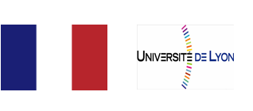

Juventud, Sudor y Triunfos
Dicen que el fútbol es el deporte más favorito del público, incluso se considera que el desarrollo de ese deporte demuestra el nivel de civilización en la economía de un país, y por otra parte, sabemos que el fútbol es el sueño de muchos jovenes en varios países. La juventud, es el período más vivo de muchos jovenes en cuanto a perseguir sueños, con cabeza y espíritu llena de pasión y vitalidad lanza hacia donde quieren llegar sin miedo a nada. Bajo estas tendencias mundiales Waylong Sports International Co.Ltd y Xiamen Weirong Sports Culture Planning Co Ltd y Xiamen Xingcai Polytechnic juntos quieren brindarles a todos los jovenes del mundo una oportunidad y escena con la Copa Mundial Universitaria de Fútbol para que se diviertan y crean recuerdos de juventud con sudores entusiasmados.
Ni pierde ni gana ninguno, lo que importa es el honor.
No buscamos estrellas, sino los espíritus que no rinden.
Piropos se disuelven en el aire, solo el corazón ambicioso con pasión vale.
Fracaso singinifica nada siempre y cuando tenga una disciplina para enfrentar otro reto.
Copa Mundial Universitaria de Fútbol 2015 ¡Ahora se inicia !

A escala internacional
El evento se celebra este año 2015 en la ciudad Xiamen de la provincia Fujian de China, y los equipos participantes vienen de los 4 continentes del mundo. Entre ellos, el equipo que se tiene que volar más distancia para llegar al país organizador es el equipo brasileño, y el equipo participante más cercano es el de Rusia. Los 12 equipos representan los más destacados de su país y se juntarán aquí en China para crear una nueva historia. Proximamente, en el mayo del 2016 se ejecutará la Copa Mundial Universitaria de Fútbol Femenono y en el julio del 2016 de nuevo la copa WUFC de universitario masculino.
Una vez al año
La Copa Mundial Universitaria de Fútbol (WUFC) se celebra en cada verano en diferentes países por turno, con el fin de llevar a cabo intercambios de técnicas extraordinarias que interpretan cada equipo élite a diferencia de las prácticas que se les entrenan por lo regular.
Exposición global
Los partidos de deporte escolar y/o universitario que vimos hoy día, todos son transmitidos por voluntad de los medios y en muy escasos canales, por lo cual, la atención que se presta resulta limitada. Nuestro evento WUFC será gestionado bajo un pensamiento distinto, ya que todo será iniciativo hacia el mundo, y así los partidos serán transmitidos a más de 200 países del mundo mediante cooperación con medios de comunicación.
Función educativa del Fútbol
El pensamiento que se refleja de un estudiante es el factor clave que determine cómo progresa el futuro de un jovencito, por ello, cuando Waylong Sport decide organizar el evento WUFC, y se espera que todos los niños que aman el fútbol, ya sea de primaria o segundaria o preparatoria o universidad tengan la oportunidad de apreciar los partidos limpios que se juegan los equipos universitarios más excepcionales del mundo mediante transmisión por internet. En la Copa Mundial Universitaria de Fútbol se reúnen equipos universitarios de todo el mundo, y seguramente cada uno cuenta con diferentes especialidades, técnicas, entrenamientos, diciplinas...etc. Por medio de esta plataforma educativa de observación directa, esperamos cambiar el pensamiento de los niños mientras brindarles una oportunidad de conseguir un nivel más avanzado de cómo jugar fútbol.

Ciudad organizadora – Xiamen
Xiamen – La ciudad es conocida como El Jardín del Mar. Con las melodías clásicas y música elegante como Nanyin(música del sur), Gozaixi(ópera taiwanesa), y Ópera Min-nan, podrás experimentar el encanto del precioso sabor folklorico y la cultura única Min-nan en Xiamen. No pierdas la oportunidad de probar la deliciosa comida y gozar la noche fantástica de Xiamen. Xiamen es nombrado a nivel tanto nacional como internacional la ciudad de jardines, la isla Gulangyu es una de las atracciones más favoritas de los turista. La música que se escucha por la mezcla de cultura oriental y occidental en isla Gulangyu hace que la isla goza una bonita reputación de ser una “Isla de pianos”. El diverso estilo arquitectónico de los edificios y casas que uno puede observar en la isla es totalmente una poema, traduce las historias únicas de este lugar. Xiamen recibe decenas de millones de turista cada año, bienvenidos a conocer nuestra ciudad.
El gobierno de la ciudad Xiamen está promocionando su 【Zona Libre de Comercio】, todos los empresarios son bienvenidos a invertir en Xiamen.

Medios de comunicación y prensa
- Canal de deporte con transmisión de partidos en EEUU y Asia : FOX Sport (4 partidos de los 2 días del final)
- Canal de deporte con transmisión de partidos en Europa : EuroSport (4 partidos de los 2 días del final)
- Canal de transmisión en China : TV por satélite (16 partidos de todos los 7 días)
- Canal de transmisión por internet en China : PPTV (16 partidos de todos los 7 días)
- GTransmisión en vivo por internet para todo el mundo : YouTube Sport (16 partidos de todos los 7 días)
- Producción y radiodifusión: Xiamen TV
Les invitamos a los medios de comunicación y prensa de todo el mundo a que se incorporen con la transmisión de partidos.
Por favor contacte con el organizador para más detalle si le interesa juntarse con nosotros.


Países y universidades participantes

China
Beijing Sport University

Malaysia
The University of Nottingham Malaysia Campus

Russian
Chengdu University of IKuban State University
-
Filipinas
Far Eastern University
-
Republicof Cameroony
limbe business college

China
Chengdu University of Information Technolog

Korea
Dong-Eui University

Portugal
University de Coimbra
- 
French
Université de Lyon

South Africa
University of Johannesburg

Japan
The University of Tokyo(TBC)
Calendario del evento
- Fecha
- Ago./ 08 Sáb.
- Ago./ 09 Dom.
- Ago./ 10 Lun.
- Ago./ 11 Mar.
- Ago./ 12 Mier.
- Ago./ 13 Jue.
- Ago./ 14 Vier.
- Ago./ 15 Dom.
- Ago./ 16 Dom.
- Programación
- Fiesta de Bienvenida
- Conferencia de prensa
Visita la ciudad Xiamen - Preliminares
- Preliminares
- Preliminares
- Preliminares
- Preliminares
- Semifinales
- Finales
- Actividades
- Llegada de los equipos participantes
- Participan los 12 equipos a la conferencia de prensa internacional
Los 11 equipos internacionales recorren los lugares de interés en Xiamen, y pasará el video de este recorrido al mundo sirviendo como una promoción de ciudad. - 19:00/ Ceremonia de pertura 19:30/Primer partido de preliminares
- 09:30/Primer partido 16:00/Segundo Partido 19:30/Tercer partido
- 09:30/Primer partido 16:00/Segundo Partido 19:30/Tercer partido
- 09:30/Primer partido 16:00/Segundo Partido 19:30/Tercer partido
- 09:30/Primer partido 19:30/Tercer partido
- 16:00/ Group1 19:30/ Grupo2
- 16:00/ 3º,4º lugar 19:30/Campeonato
Ceremonia de premiación
- Fecha
- Ago./ 08 Sáb.
- Ago./ 09 Dom.
- Ago./ 10 Lun.
- Ago./ 11 Mar.
- Ago./ 12 Mier.
- Ago./ 13 Jue.
- Ago./ 14 Vier.
- Ago./ 15 Dom.
- Ago./ 16 Dom.
- Programación
- Fiesta de Bienvenida
- Conferencia de prensa
Visita la ciudad Xiamen - Preliminares
- Preliminares
- Preliminares
- Preliminares
- Preliminares
- Semifinales
- Finales
- Actividades
- Llegada de los equipos participantes
- Participan los 12 equipos a la conferencia de prensa internacional
Los 11 equipos internacionales recorren los lugares de interés en Xiamen, y pasará el video de este recorrido al mundo sirviendo como una promoción de ciudad. - 19:00/ Ceremonia de pertura 19:30/Primer partido de preliminares
- 09:30/Primer partido 16:00/Segundo Partido 19:30/Tercer partido
- 09:30/Primer partido 16:00/Segundo Partido 19:30/Tercer partido
- 09:30/Primer partido 16:00/Segundo Partido 19:30/Tercer partido
- 09:30/Primer partido 19:30/Tercer partido
- 16:00/ Group1 19:30/ Grupo2
- 16:00/ 3º,4º lugar 19:30/Campeonato
Ceremonia de premiación

Selección de las chica embajadora de fútbol
¿Sueñas convertirte en una de las niñas más encantadoras y que te adoren los cientos millones de fanáticos de todo el mundo?
¡Ya no dudes más, ven a inscribirte!
¡Cómo puede faltar unas chicas guapas durante los partidos más emocionantes de la temporada! La 1ª edición de Copa Mundial Universitaria de Fútbol ha cooperado con los medios de comunicación y prensa de los 4 continentes (América, Asia, África, Europa), y están más que dispuestos a transmitir los partidos entusiasmados al mundo vía internet, todo el evento será apreciado por más de 200 países del mundo. Serán seleccionadas las 12 chicas embajadoras mediante votación en la página web oficial, las cuales además acompañarán a los 12 equipos durante todos los 8 días del evento echándoles porras y apoyos. ¿Te imaginas ser la chica embajadora del país organizador y atiende a equipos internacionales durante las batallas de hombres en la cancha? Aquí está tu oportunidad.
Cómo participar:
A partir del 1 de junio, en la página web oficial podrán consultar los términos y las condiciones de inscripción y premiación. Todas las estudiantes chinas de edad entre 17~21 son bienvenidas a inscribirse y participar en este evento internacional
¡ Fíjense las informaciones actualizadas en página web oficia¡
Inscripción : desde 6 de junio hasta 25 de junio
Selección y votación : desde 1 de julio hasta 12 de julio.
Inscríbete al email: 3270249375@qq.com
Premios :
- Recibirán 2 semanas de capacitación de etiqueta y protocolo.
- Las 12 chicas embajadoras seleccionadas serán premiadas por el organizador premios de $20,000RMB más una tableta.
- Oportunidad de presentarse ante todo el mundo.

¿Quién será el campeón?
Ven a pronosticar el campeón y probar tu suerte.
¿Te gustaría ganar una pelota de recuerdo del evento? Realiza tu voto único en nuestra página web, tendrás oportunidad de llevarla a casa.
Cómo participar:
Cada persona cuenta con sólamente un voto, vota al equipo que creas que gane el campeón del evento “2015WUFC (Copa Mundial Universitaria de Fútbol)”durante el 10 de julio a 5 de agosto del 2015. (Pueden votar todos los interesados del mundo)
Premios:
Al darse de conocer el campeón del evento en el día 16 de agosto, se sorteará al azar por computadora 500 aficionados afortunados, los cuales recibirán una pelota de recuerdo con el logotipo del evento. No importa de donde viene el aficionado afortunado, el organizador hará llegar lo más pronto posible el regado con el propósito de agradecer a los espectadores que nos apoyan.


Contacte con nosotros
Organizadores
Walong Sports International Co.,Ltd.
Xiamen Xingcai Polytechnic
Xiamen Weirong Sports Culture Planning Co Ltd
Email de China:wufc2015@163.com